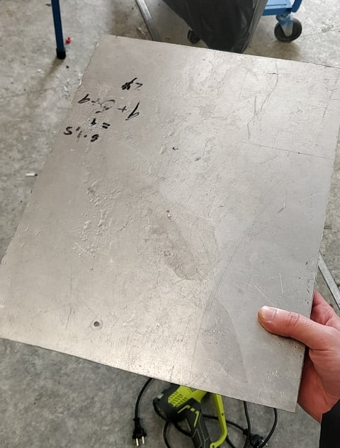
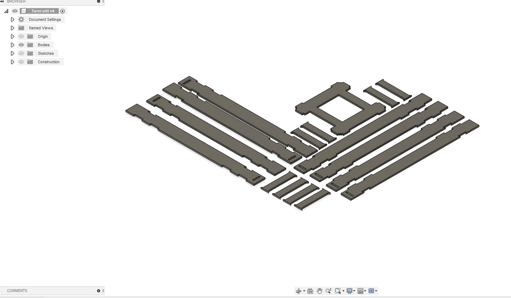
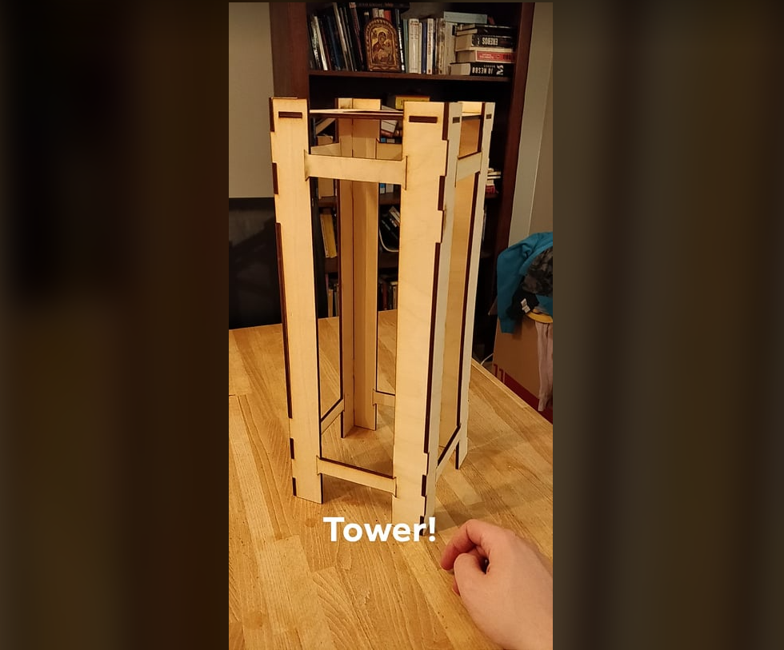
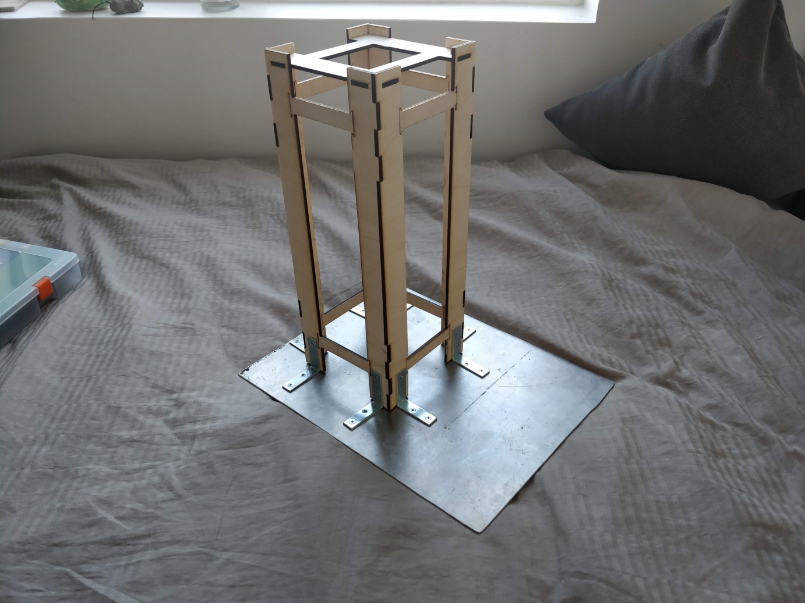
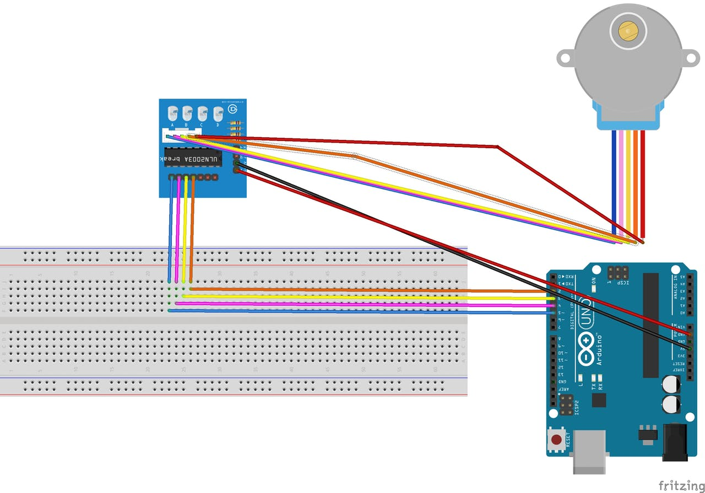
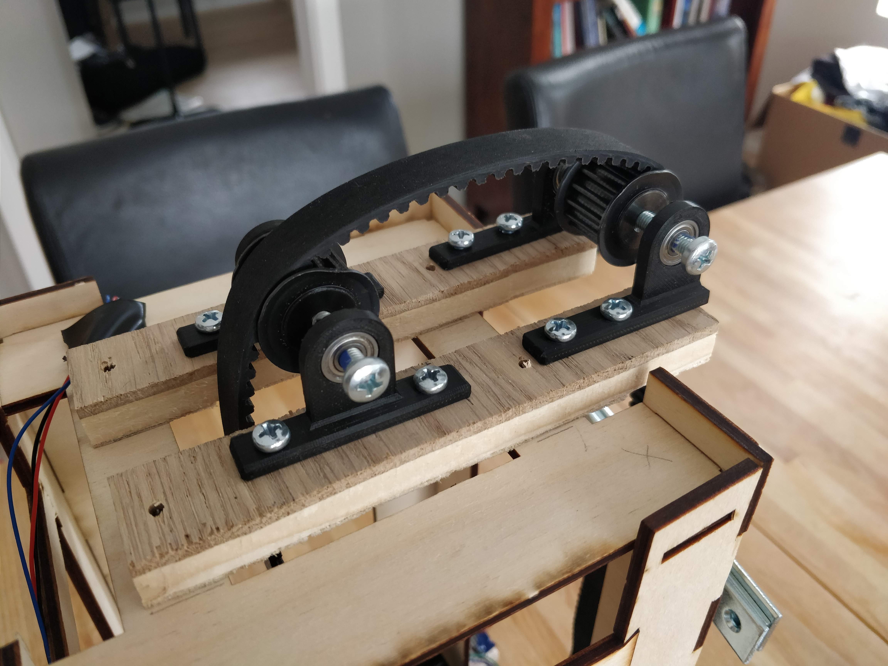
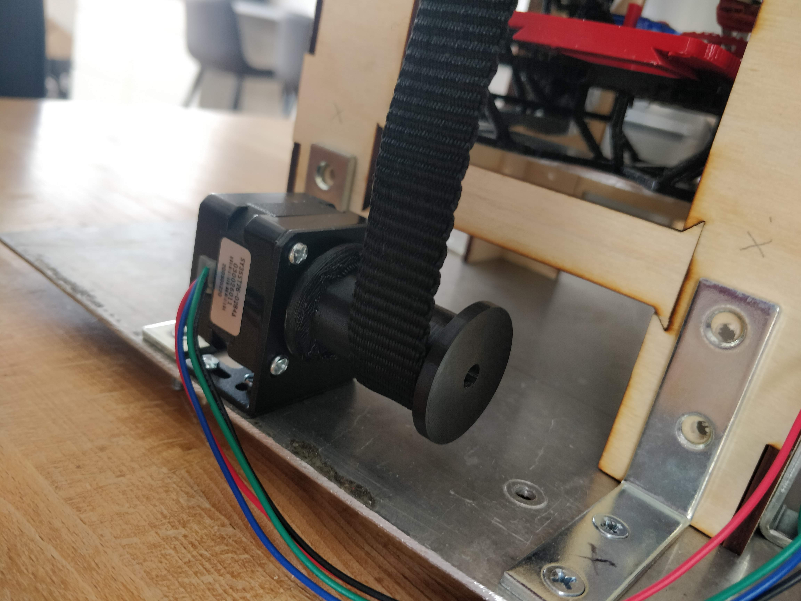
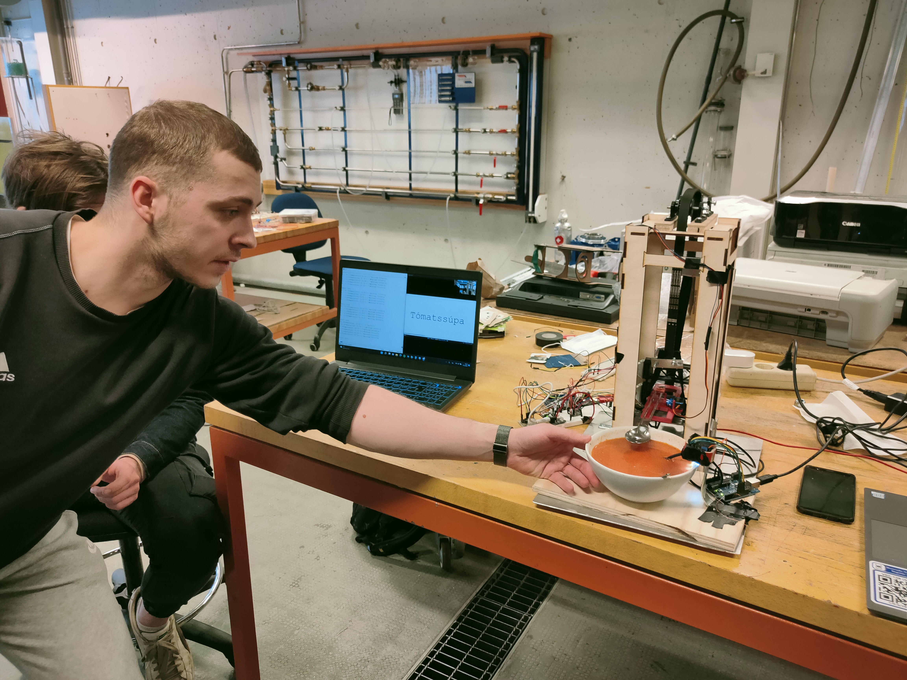

Súpu-Vélmenni
Verkefni 2 í tölvustýrðum vélbúnaði. Þetta er dagbókin um gerð á vélmenni sem fóðrar notenda súpu.

Við erum þriggja manna hópur. Ég, ritari þessarar dagbókar, heiti Atli Tobiasson Helmer en með mér eru þeir Finnur Mauritz Einarsson og Þórhallur Tryggvason. Dagbókin er skipt í kafla og eru kaflaskilin einfaldlega dagsetningarnar þegar unnið var í verkefninu.
1.2.2022Ég (Atli) er núna ekki enn kominn með hóp en það ætti að leysast á næstu dögum. Fyrsta skrefið er að ákveða hvernig skeiðin mun hreyfast frá skál og að munni notenda. Líklegast er best að hafa fjórar frelsisgráður. Ein til að færa skeiðina upp og niður, ein til að færa hana fram og aftur, ein til að halla henni eftir láréttum ás upp og niður (svo hún geti tekið súpu úr skálinni) og ein sem snýst eftir lóðréttum ás þannig hún beinist að notenda.

Eftir miklar vangaveltur hef ég ákveðið að hanna turn sem hefur kranaelement. Þessi krani er festur við braut turnsins og færist upp og niður með kaðli (líkt og í lyftum) en mótorinn er neðst í turninum. Kosturinn hérna er sá að búnaðurinn þarf ekki að vera mjög flókinn í smíðina á þessu.

Kranaelementið umlykur svo turninn á eftirfarandi máta:
 2.2.2022
2.2.2022
Nú sendi ég hugmyndirnar á Magnús Þór Jónsson kennara námskeiðsins til að fá staðfestingu um hvort þessi turn sé raunhæfur. Ég byrja svo að huga að vefsíðuhluta verkefnisins. Fyrir mér er óljóst hvort við séum að keyra vefsíðuna úr örtölvunni og hvernig hún á að vera aðgengileg. Eftir nokkra klukkutíma af vafasömum google-leiðangri gefst ég upp.
5.2.2022Magnús hefur ekki enn svarað en nú sendi ég á Vilhjálm Ívar Sigurjónsson og spyr um hvernig vefsíðan er framkvæmd. Þetta er þáttur verkefnisins sem mig langar að sé mjög skýr. Vilhjálmur áframsendi póstinn á Magnús en þá kom í ljós að hann er í útlöndum sem útskýrir að hann svaraði ekki upphaflega.
7.2.2022Ég og Vilhjálmur mælum okkur mót um að hittast næsta dag til að ræða vefsíðumálin
8.2.2022Vilhjálmur útskýrir að vefsíðan er mun einfaldari en ég hafði ímyndað mér. Eftir útskýringuna hans á ég erfitt með að skilja afhverju mér fannst þetta svona ruglandi.Fyrst skal ég finna út úr því hvernig ég læt örtölvuna vista .txt skrár inn á fartölvuna mína og í framhaldi vista ofan á þær aftur á einhverju tímabilsfresti. Útfrá þessu get ég gert einfalda HTML síðu með þá eiginleika að hún endurhleður sig á sama tímabilsfresti og varpar .txt skránni þangað. Hvort þessi vefsíða sé einungis aðgengileg úr minni tölvu, háskólanetinu eða bara hvar sem er er okkar eigið val.Vilhjálmur lánaði mér einnig stepper mótor sem við ætlum að læra á.
 10.2.2022
10.2.2022
Ég eyddi kvöldinu í að finna hvernig maður skrifar .txt skjöl sjálfvirkt úr teraterm. Ég fann skjöl eins og FATFileSystem.lib en þau eru hugsuð fyrir geymsluminni sem er á örtölvunni, ekki í minni eigin PC-tölvu. Eftir nokkra klukkutíma leiðangur gefst ég upp. Á morgun hef ég aðeins tvo valkosti, hafa samband við kennarana eða skipta um örtölvu.
11.2.2022Ákvörðunin er að sækja hjálp frá kennurum og vinna í öðru á meðan ég bíð eftir svari. Ástæðan er sú að mig langar að halda mig við örtölvuna sem við fengum lánaða þar sem hægt er að afla upplýsingasafnið í kringum hana og þá er einnig léttara að skilja kóða hjá öðrum hópum (sem nota hana).Ég mun bara nýta mér næsta fyrirlestur námskeiðsins (þriðjudaginn) til að fá þetta á hreint. Vefsíðan sjálf virkar og getur lesið .txt skjöl. Eini þátturinn sem vantar er að örtölvan skrifi yfir þetta .txt skjal.

Það vill svo heppilega til að ég á Mega 2560 Procjet sem inniheldur marga nauðsynlega íhluti í þetta verkefni, þar á meðal brauðbretti, víra og alls kyns skynjara.Mótorinn sem ég fékk lánaðan heitir Nema 14 frá Pololu og á vefsíðu hans er hægt að finna alls kyns upplýsingar um hvernig á að beita honum
13.2.2022Markmiðið í dag er að virkja þennan mótor (Nema 14). Til þess nota ég ákveðna stjórnstöð fyrir mótorinn sem þarf að tengja á eftifarandi hátt:

Markmiðið var að stilla viðnámið í ~500mV en það kom fljótt í ljós að einhvers staðar væri laus tenging því gildið í fjölsviðsmæli mínum var alltaf að sveiflast til og fór aldrei yfir 200. Svona fór ég að:
Gallinn í þessu myndbandi er að það sést ekki hvert skrúfujárnið fer og einnig gleymi ég að kveikja á aflgjafanum.Nú er ég staddur á tveimur flöskuhálsum. Ég hef ekki hugmynd um hvernig ég læt örtölvuna búa til .txt skrá í PC tölvuna og það er laus tenging í stjórnstöð mótorsins. Á þriðjudaginn mun ég fara til kennaranna og spyrja þá út í þetta.16. febrúar hef ég aðgang að þrívíddar prentara og ætla ég að vera búinn að hanna kranaelement vélmennisins fyrir þann tíma. Þetta er því dagurinn sem ég byrja að hanna það en grein um vinnsluferlið má nálgast hér
15.2.2022Þriðjudagurinn er runninn upp og kennararnir gáfu mér ágæt svör. Magnús sagði að í staðinn fyrir að reyna að fá örtölvuna sjálfa til að skrá .txt skrá ætti ég frekar að gera kóða á PC tölvuna sem les port-upplýsingarnar frá örtölvunni (í gegnum usb-tengið).Vilhjálmur hjálpaði mér einnig að laga tenginguna á brauðbrettinu (í mótorinn) þannig ég fengi 9V í stað 5V. Hann benti mér á að tengja mótorinn við tölvuna og reyna að fá hann í gang áður en ég reyni að mæli spennugildi.Loks var hópurinn minn að deila um hvaða hugmynd væri best. Ég var enn sannfærður um að hugmyndin mín upphaflega (með kranan) væri geranleg en Þórhallur taldi sig hafa fundið einfaldari lausn. Eftir langar rökræður um kosti og galla hugmyndanna var ákveðið að báðar hugmyndirnar yrðu framkvæmdar. Á þann hátt er meira öryggi í því að ef önnur hugmyndin virkar ekki er alltaf til plan B. Síðan í lok vikunnar verður metið hvor hugmyndin gengur betur og sú verður þá lokaniðurstaðan.Ég fór strax í verkið og smíðaði botn fyrir allan turninn:

Grindin á turninum verður úr krossvið sem verður skorinn með laserskeri (í fablab). Ég hafði ekki mikinn tíma til að teikna hana en þrátt fyrir það kom hönnunin vel út. Til að sjá nánar hvernig maður gerir laserskera-verkefni í Fusion, skoðaðu Verkefni 2.

Skjalið flutti ég samdægurs í fablabið og ýtti á 'PRENTA':
Ég púslaði turninn saman og hann stóð hátt:

16.2.2022Í dag var ég aðalega að vinna í kranaelementinu en tókst þó líka að tengja einn servo-mótor:
18.2.2022Í dag fór ég í Bauhaus og verslaði slatta af skrúfum og boltum. Með þessu sameinaði ég svo botnplötuna og turninn.

Einnig festi ég skeiðina okkar og servo-mótorinn við fyrsta hluta kranaelementsins.
19.2.2022Mótorinn sem færir tunguna í kranaelementinu fram og aftur er stepper mótor af gerðinni 28BYJ-48. Hann er stýrður af stjórnstöðinni ULN2003 (fylgir oft með mótornum). Þennan mótor tengi ég á eftirfarandi hátt (sjá grein):

Kóðinn í greininni var rangur en ég notaðist frekar við þennan kóða.
20.2.2022Mér finnst alltof erfitt að finna upplýsingar fyrir nucleo brettið svo ég hef gefist upp á að tengja mótorana við það. Í staðinn nota ég arduino brettið sem fylgdi með Mega 2560 pakkanum.
27.2.2022Ég kem með seina uppfærslu af því að ég greindist með Covid eftir síðustu uppfærsluna og var fárveikur þangað til í dag. Skilafresturinn er á morgun en ég veit það núna að verkefnið verður ekki tilbúið þá. Það verður nálægt því að vera tilbúið en ég verð að fá þrjá auka daga.Verkefnin í dag eru:
- Tengja og stjórna Nema-14 mótornum (lyfti-mótorinn)
- Ákvarða hvar ég fæ íhlutina sem vanta í lyftibúnaðinn (kaðallinn, tromlur, lóð)
Fyrst þarf ég að klára að tengja mótorinn. Ég fylgi þessu myndbandi:
Þegar ég set mótorinn í gang hnökrar hann rosalega og maður fær það á tilfinningu að hann sé að vinna á móti sjálfum sér. Útfrá hljóðinu heyrist þó að hann sé að fylgja kóðanum sem ég afritaði úr myndbandinu svo það er ekki flöskuhálsin. Næst prufaði ég að mæla strauminn sem flæðir um mótorinn frá kraftmeiri aflgjafanum. 0.59mA, eða í rauninni engin straumur. Þegar ég slekk á þessum aflgjafa breytist einnig ekkert í mótornum heldur hnökrar hann áfram. Þetta þýðir einfaldlega að annað hvort hef ég skemmt stjórnstöðina milli aflgjafans og mótorsins eða gefið hana rangar stillingar. Ég spyr Aron, úr öðrum hópi, um aðstoð.Á meðan þetta er að leysast fer ég að googla eftir litlum lóðum sem gefa mótvægi á móti þunga kranaelementsins. Ég fann þetta strax. Tvö svona stykki eru þá 224 grömm. Ég spái að kraninn verði 276 grömm svo það verður 52 gramma munur sem mótorinn þarf að bera. Það ætti að takast.
7.3.2022Mikið búið að gerast. Aftur, þar sem við vorum allir með covid þurfti að fresta skilafrestinum. Vilhjálmur hjálpaði mér að fá mótorinn í gang. Hann benti mér á þessa slóð á github sem er með sérstakar leiðbeiningar.Allt er nánast tilbúið. Það eina sem vantar eru trissur og belti til að tengja mótorinn við kranann. Til þess fer ég á morgun í Fálkann Ísmar að verslaEinnig ef þetta plan virkar ekki þá er Tóti að vinna í varaáætlun sem getur stýrt lyftibúnaðinum.Einnig er Finnur Mauritz að vinna í hitanemanum og litaskynjara.
8.3.2022Ég fór í morgun í Fálkann að kaupa viðeigandi belti og trissur. Nú þegar ég spekúlera hvernig ég festi trissurnar varð ég var við þetta:
Það sem vantar er eftirfarandi:
- 4x legur
- 2x sköft
- 3D-prentaðir íhlutir
- Skrúfur til að festa
Þegar þessu er lokið tel ég allan búnað vera komin sem þarf í þetta. Ég ætla nú aftur í fálkann að sækja legurnar og sköftin.Ég fór s.s. aftur í fálkann og sótti legurnar, skötfin urðu bara tvær passlegar skrúfur sem ég fann heima, íhlutina prentaði ég hjá Hafliða (VÉL608G) og skrúfurnar til að festa fundust einnig heima.
10.3.2022Nú var bara um að gera að bora og skrúfa allt saman.


Að festa svo kranaelementið við tímareimina var vesen en það sem þurfti í rauninni voru reimar, saumnálar og þolinmæði.
12.3.2022Laugardagurinn einkennist af tímafrekri vinnu þar sem ég sauma tímareimina betur, stilla lóðin sem vega á móti kranaelementinu betur og lóða alls konar snúrur.
13.3.2022Þennan dag er ég ennþá að fínpússa allar tengingar og festingar. Þetta er tímafrekt.
14.3.2022Nú er mánudagur og er það síðasti dagurinn fyrir skil. Ég flyt allan búnaðinn í VR-III þar sem róbotinn verður sýndur. Þar klára ég að tengja servo-mótorinn og hinn mótorinn sem færir skeiðina fram. Takið eftir að fjórða frelsisgráðan, sem var talað um í upphafi þessarar dagbókar, fylgir ekki lengur með.Finnur kemur svo með litskynjara og hitanema og við tengjum allt saman. Nú voru öll tengin frátekin í örtölvunni minni svo litskynjarinn var tengdur við Rasperry Pi tölvu sem Finnur átti. Þetta er í lagi þar sem róbotinn skiptir sér ekki að því hvort súpan sé aspas- eða tómatsúpa. Tóti smíðar botnplötu fyrir okkur svo að Kraninn helst stöðugur í lægstu stöðu sinni og þannig að hann taki súpuna úr réttri hæð.Hita- og litskynjarinn eru festir við vinkil uppvið súpuskálina.
15.3.2022
Í dag er stóri dagurinn runninn upp! Við buðum kennurum og nemundum í VR-III að fylgjast með hvernig róbotinn stýrist. Umsjónakennari námskeiðsins, Magnús Þór Jónsson fékk þann heiður að smakka Aspassúpuna okkar.



Ég minni loks á dagbók kranaelementsins þar sem það er lykilþáttur í þessu verkefni.Einnig var notuð vefsíða til að birta mynd af starfsemi vélmennisins í beinni, upplýsingar um tegund súpu og hitastig súpunnar. Hér er hlekkurinn á þá síðu.Hér eru loks skrárnar sem notaðar voru til að keyra örtölvurnar bæði fyrir vélmennið og einnig fyrir litskynjarann